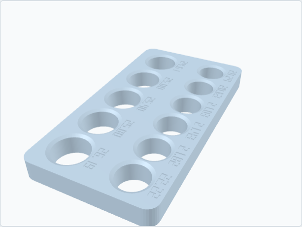

Fit Kit
$24 plus shipping, and the $24 comes off a Rev Ball.
Order on Etsy Build it first, free

Find your size before you print your fit. The Fit Kit is a flat plate I print around the thumb and finger hole sizes you expect, in 1/64-inch steps, with the size engraved next to each bore. It comes with a roll of bowler's tape and a card that says what a good fit feels like: snug all round at the first joint, no squeeze needed to hang on.
Why it exists: printed holes come out a few tenths of a millimeter smaller than drawn. The plate comes off the same printer, in the same material, as your Rev Ball, so the bore that fits your thumb on the plate is the bore I print in your ball.
How you use it
Put your thumb in each bore in turn. The right one is snug all round at the first joint with no squeeze needed to hang on. Same for the middle and ring fingers. Write the three sizes down and put them on your order. Then build any fit back with the tape, exactly like on a ball.
What you need to order
Your expected thumb, middle and ring sizes from your drill sheet. No sheet? Write "unknown" and tell me whether your hand is small, medium or large, and I'll center the plate on common sizes.
In the box
- One sizer plate, about 175 by 92 by 15 mm, about 100 g, bores sanded lightly
- A roll of bowler's tape
- The fitting card
- A code good for $24 off a Rev Ball
Lead time
Printed flat with no supports, 1 to 2 business days, then 2 to 5 days in the post. Unused, it's returnable within 30 days. The full terms.
A fitting tool for off the lane. It is not a bowling ball.